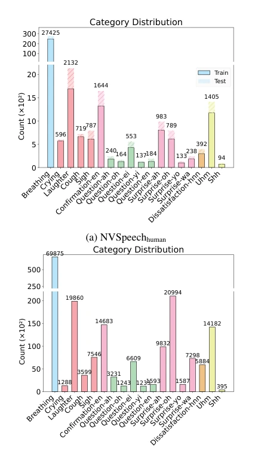
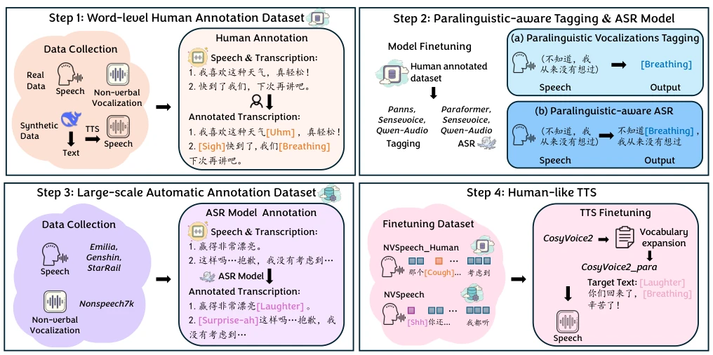
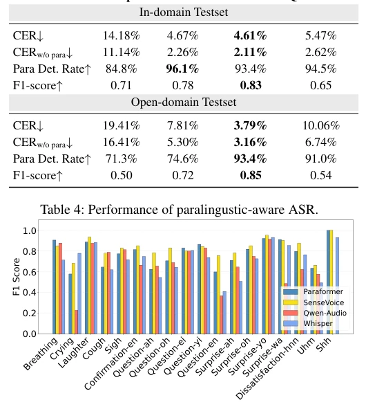
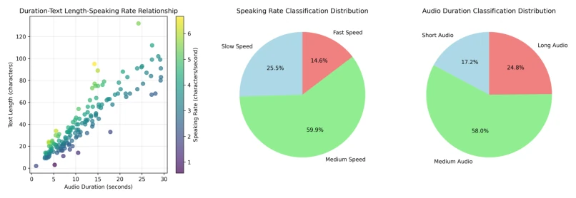
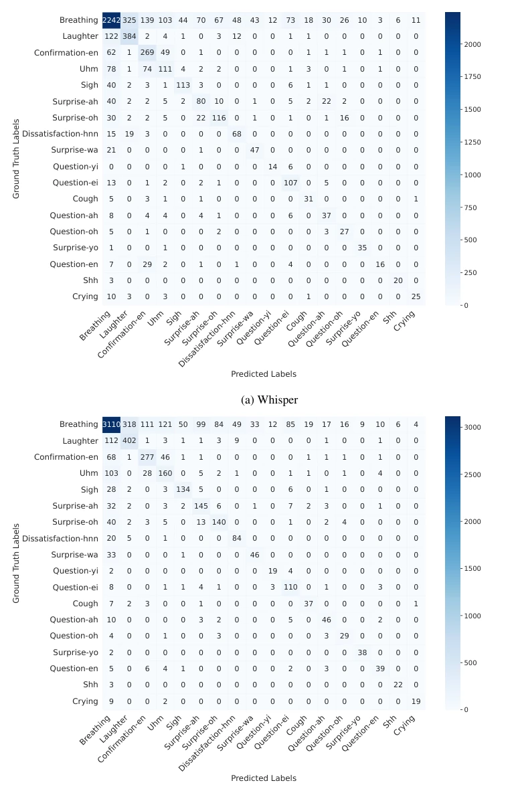
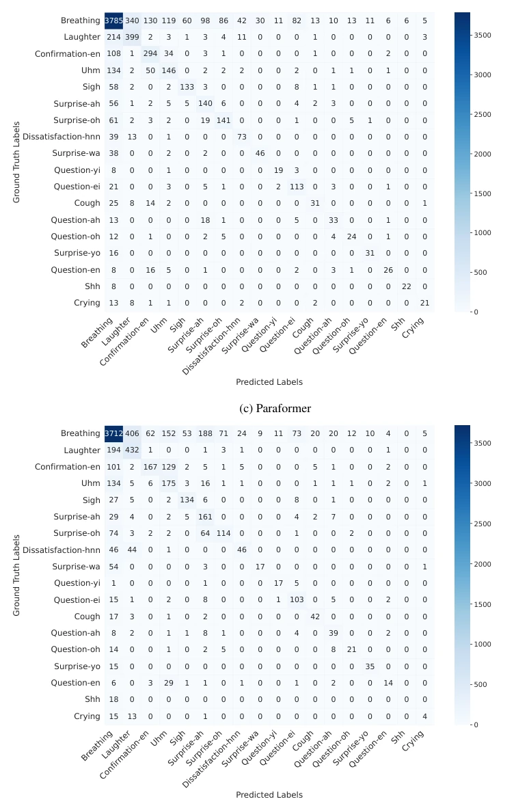
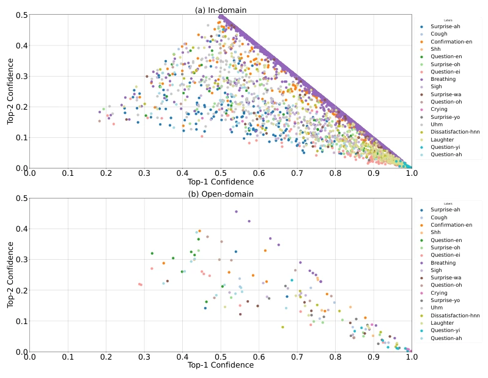

这篇 NVSpeech 给中文语音模型强行加了点“人味儿”，把笑声、呼吸和“呃啊”从噪音变成了可识别的 token。虽然号称“人类化”，但本质还是 ASR 和 TTS 的套娃优化，离真正的具身智能（Embodied AI）还差得远。作者用游戏语音凑数据，虽然量大，但游戏语境和真实交互的噪音环境差异不小，泛化性存疑。不过，把副语言细粒度标注做成开源 pipeline，确实给中文语音领域补了一块短板，至少以后机器人说话不会像复读机了。
This NVSpeech injects a certain degree of "human touch" into Chinese speech models, transforming laughter, breathing, and "uh-ah" from noise into recognizable tokens. Although claimed to be "humanized", the essence remains nested optimization of ASR and TTS, far from true Embodied AI. The authors assembled data using game voice recordings; although the volume is large, there is a significant difference between the game context and the noise environment of real interactions, raising doubts about generalization. However, converting paralinguistic fine-grained annotation into an open-source pipeline does fill a gap in the Chinese speech domain. At least, robots will no longer speak like parrots in the future.
研究动机Motivation
现有 ASR 系统通常把副语言（如笑声、呼吸）视为噪声过滤掉，导致无法理解真实对话中的情感意图 [1]。现有的 TTS 系统虽然支持部分指令控制，但缺乏细粒度的词级对齐，合成语音缺乏 spontaneity [4]。中文领域尤其缺乏大规模、词级对齐的副语言数据集，现有数据集多为句级标注或英文为主 [9]。这导致模型难以捕捉口语中的犹豫、强调等细微线索，限制了人机交互的自然度。
Existing ASR systems typically treat paralinguistic features (such as laughter, breathing) as noise to be filtered out, resulting in an inability to understand emotional intent in real conversations [1]. Although existing TTS systems support partial instruction control, they lack fine-grained word-level alignment, and the synthesized speech lacks spontaneity [4]. The Chinese domain particularly lacks large-scale, word-level aligned paralinguistic datasets; existing datasets are mostly sentence-level annotated or predominantly English [9]. This makes it difficult for models to capture subtle cues such as hesitation and emphasis in spoken language, limiting the naturalness of human-computer interaction.

Figure 4: Paralinguistic vocalization category distribution
This paper proposes the NVSpeech pipeline, which proceeds in three steps. First, 48,000 Chinese sentences are manually annotated, covering 18 categories of paralinguistic features, to establish high-quality seed data. Second, a trained paralinguistic-aware ASR model (based on SenseVoice) is utilized to treat paralinguistics as decodable inline tokens (e.g., "don't know [Breathing]"), automatically annotating 174,000 sentences of large-scale data to achieve low-cost expansion. Finally, fine-tuning is performed on TTS models such as CosyVoice, supporting the insertion of paralinguistic tags at any token position to achieve controllable synthesis. The core innovation lies in unifying paralinguistics into a token sequence, bridging the boundary between recognition and generation.

Figure 2: Overview of our paralinguistic-aware speech recognition and generation pipeline.(1) A word-level human annotated dataset of verbal and non-verbal vocalizations is first constructed. (2) A paralinguistic-aware ASR model is trained to jointly transcribe verbal and non-verbal content. (3) This model is used to automatically annotate large-scale unlabeled speech. (4) The expanded dataset enables training a controllable and expressive TTS system that explicitly renders paralinguistic cues.
实验Experiments
在 NVSpeech 数据集上评测了 PANNs、SenseVoice 等 ASR 模型，SenseVoice 在 F1 上表现最佳（0.85）。TTS 实验对比了 CosyVoice 和 CosyVoice2，微调后在人类偏好测试中胜率提升（78.7%）。自动标注数据在同等规模下效果接近人工标注，大规模数据进一步降低了 CER。结果显示，引入副语言标签并未牺牲词汇识别质量，反而提升了合成语音的自然度（UTMOS 提升）。
ASR models such as PANNs and SenseVoice were evaluated on the NVSpeech dataset; SenseVoice performed best on F1 (0.85). TTS experiments compared CosyVoice and CosyVoice2; after fine-tuning, the win rate in human preference tests improved (78.7%). Automatically annotated data achieved results close to manual annotation at the same scale, and large-scale data further reduced CER. Results show that introducing paralinguistic tags did not sacrifice lexical recognition quality, but instead improved the naturalness of synthesized speech (UTMOS improvement).

Figure 3: F1 scores across paralinguistic categories.

Figure 5: The distribution of speaking rate and audio-length. Slow speed (≤3.00 chars/sec), medium speed (3.00–4.50 chars/sec), fast speed (> 4.50 chars/sec). Short audio (≤5 seconds), Medium audio (5–15 seconds), Long audio (> 15 seconds).
其他图片Other Figures

Figure 1: Confusion matrices of four paralinguistic-aware ASR models (Part 1/2).

Figure 1: Confusion matrices of four paralinguistic-aware ASR models (Part 2/2)

Figure 2: Top-1 vs. Top-2 confidence scores for correctly predicted paralinguistic events.